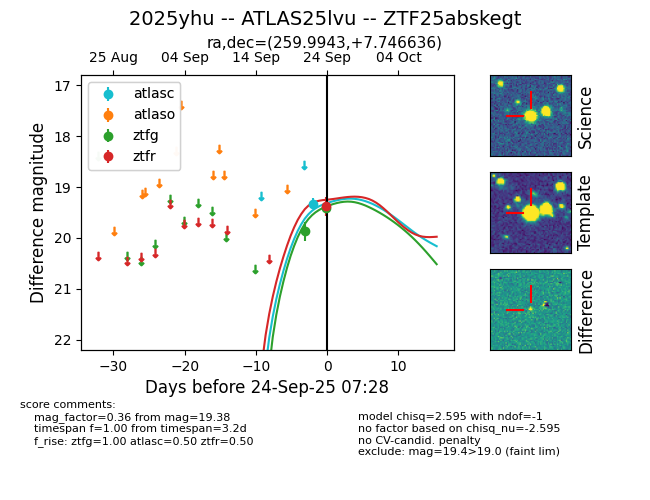
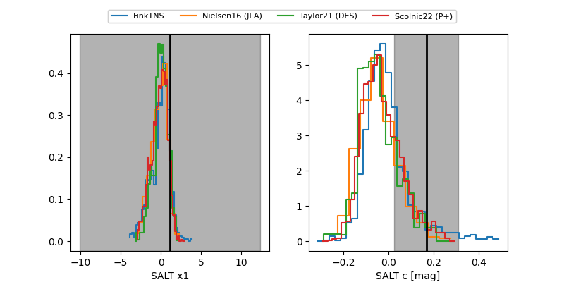

FINK: ZTF25abskegt
Lasair: ZTF25abskegt
ALeRCE: ZTF25abskegt
TNS: 2025yhu
YSE: 2025yhu
ZTF25abskegt (ztf,fink)
2025yhu (tns,yse)
ATLAS25lvu (atlas)
equatorial (ra, dec) = (259.9943,+7.74664)
galactic (l, b) = (29.4472,+23.83632)


last atlasc=19.33, ztfg=19.41, ztfr=19.38
1 atlasc, 2 ztfg, 1 ztfr detections